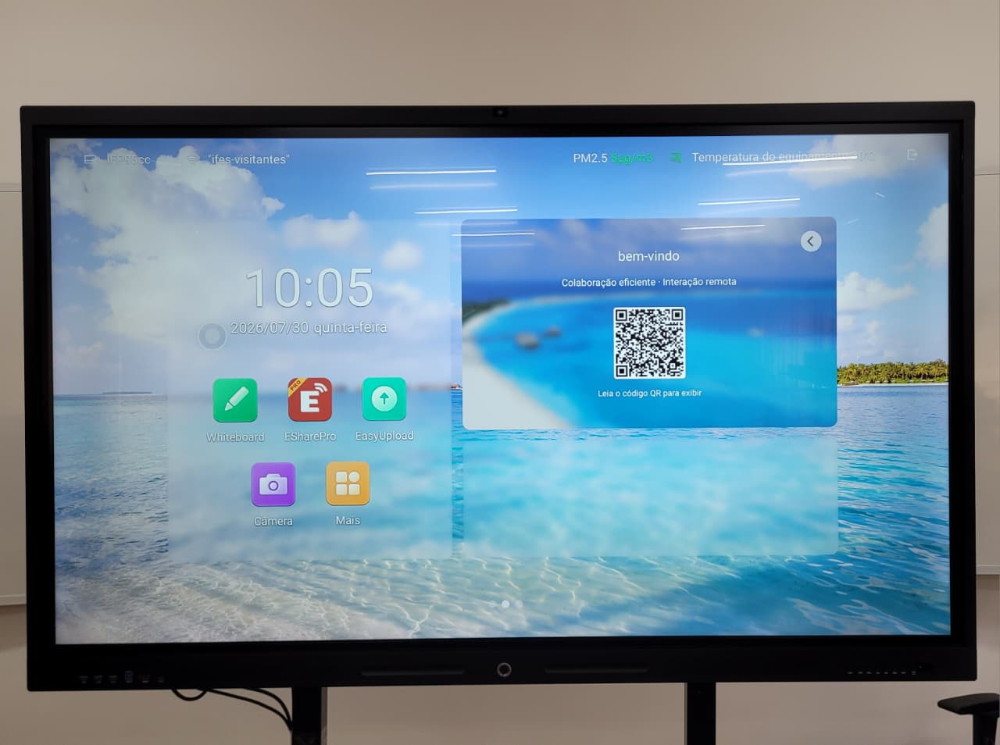

Display Interativo OPERACIONAL
Categoria: Sistema interativo de ensinoIdentificação Patrimonial
| Código Interno | TVT001 |
|---|---|
| Endereço Físico | TV1 |
| Fornecedor | Brink Mobil |
1. Descrição e Finalidade
O Display Interativo é um equipamento destinado ao apoio às atividades de ensino, pesquisa e extensão desenvolvidas no Laboratório de Logística. Além de funcionar como um monitor de grandes dimensões para apresentações, permite interação direta por meio de tecnologia sensível ao toque, possibilitando a realização de aulas expositivas, resolução colaborativa de exercícios, demonstrações de softwares, simulações e outras atividades didáticas.
O equipamento também pode ser utilizado em conjunto com computadores, dispositivos móveis e aplicações específicas, ampliando as possibilidades de utilização do laboratório.

2. Especificações Técnicas
| Marca / Modelo | Brink Mobil/HJ-TD65 |
|---|---|
| Dimensões (A×L×P) | 198 x 150 x 58cm |
| Conectividade | USB / Wi-Fi / Bluetooth |
| Acessórios Inclusos | Caneta interativa, mouse, teclado e controle remoto |
3. Guia Rápido de Operação
Checklist pré-uso:
- Verificar se o cabo de alimentação está conectado e se o equipamento está ligado ao interruptor da rede elétrica.
- Certificar-se de que não há objetos obstruindo a ventilação do display e que a tela está limpa e livre de impactos.
Passo a passo:
- Acione o interruptor localizado na lateral do display. Aguarde a inicialização do sistema e, na tela de seleção de usuários, escolha o perfil Proprietário.
- O display será iniciado no sistema Android. Para acessar outras fontes, toque na seta lateral da tela e selecione a última opção do menu. Em seguida, escolha a fonte desejada:
- OPS: computador interno do display (Windows);
- HDMI 1: computador da sala conectado ao display;
- HDMI 2: entrada disponível para conexão de notebook ou outro computador externo.
- Para desligar, mantenha pressionado o botão físico Power até que o equipamento inicie o processo de desligamento. Aguarde a mensagem de encerramento e somente após o LED frontal mudar para a cor vermelha desligue o interruptor lateral do equipamento.
4. Normas de Segurança e Cuidados
EPIs necessários: não se aplica
Quem pode operar: professor, técnico de laboratório e estudante sob supervisão.
Restrições: utilização apenas mediante projeto específico nas dependências do laboratório, interagir apenas com mãos limpas e equipamentos/periféricos adequados, não utilizar canetas ou marcadores na tela.
Treinamento necessário:
- ☑️ Nenhum
- 🔲 Básico
- 🔲 Intermediário
- 🔲 Operação exclusiva do técnico
5. Manutenção e Conservação
Procedimento de Limpeza: Desligue o aparelho e desconecte-o da tomada antes de iniciar. Utilize um pano de microfibra macio, seco ou levemente umedecido com água destilada ou álcool isopropílico (70%). Nunca borrifar líquidos diretamente sobre a tela ou nas bordas do painel.
Produtos Proibidos: Evite o uso de limpa-vidros convencionais, produtos à base de amônia, álcool etílico comum, sapólio ou panos abrasivos que possam arranhar o revestimento antirreflexo ou danificar os sensores do touch.
Estrutura e Conectividade: Limpe as saídas de ar de ventilação com pano seco ou espanador macio para evitar o acúmulo de poeira e o superaquecimento do módulo OPS. Verifique o aperto dos parafusos do suporte de fixação (parede ou móvel) e o estado dos cabos e conectores.
6. Checklist Pós-Uso
Antes de deixar o equipamento, verifique:
- Desligar corretamente o equipamento.
- Guardar todos os acessórios.
- Organizar cabos e periféricos.
- Limpar o equipamento, quando aplicável.
- Registrar qualquer anormalidade observada durante a utilização.